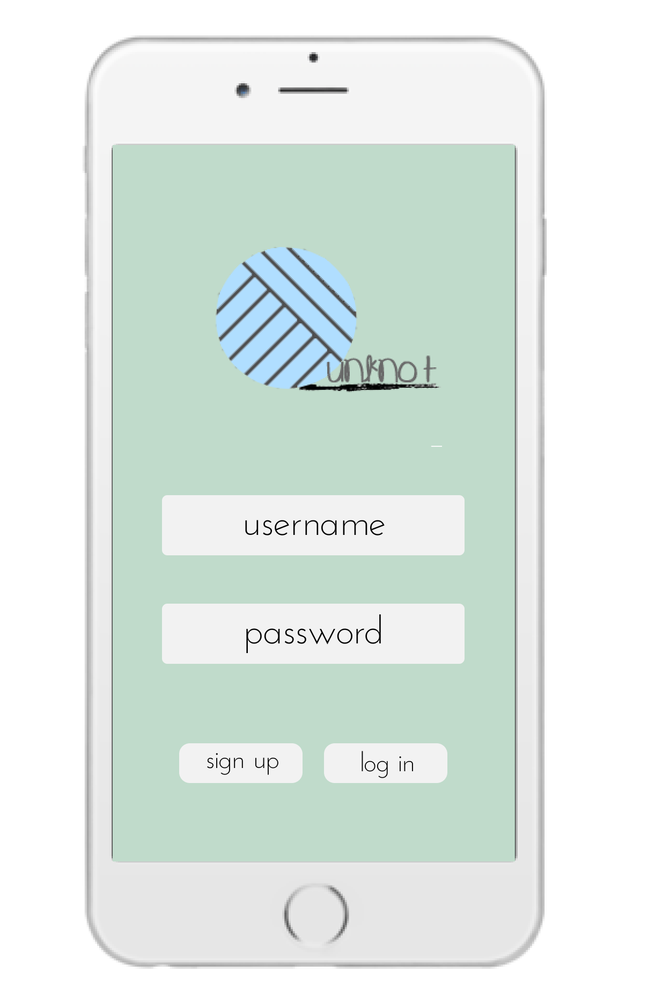
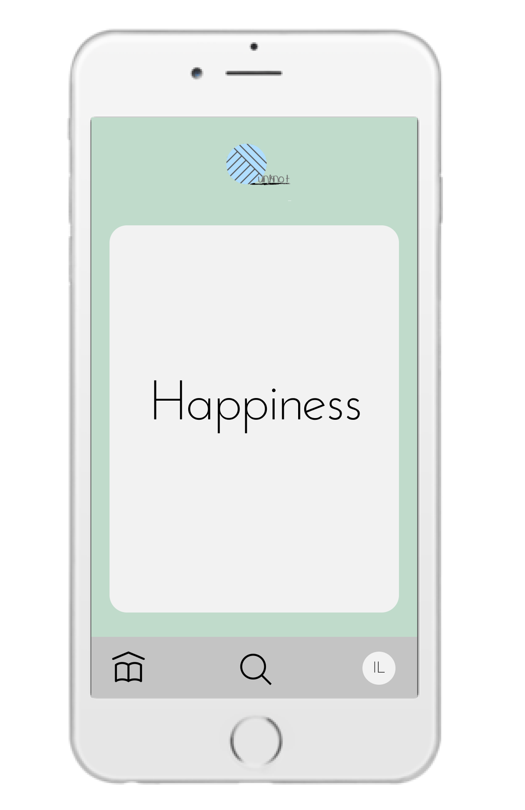
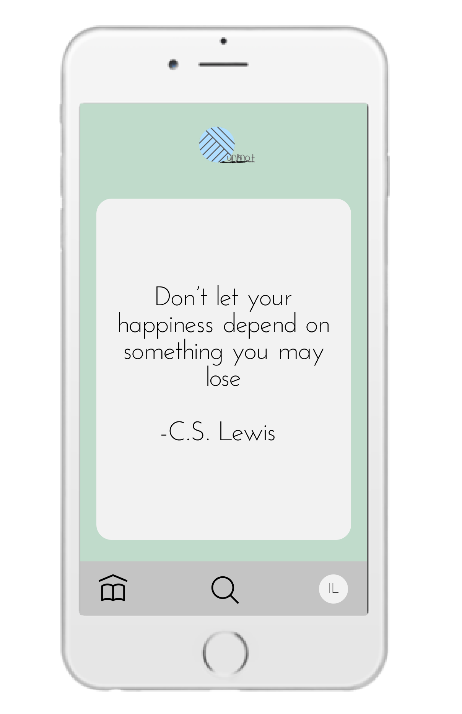
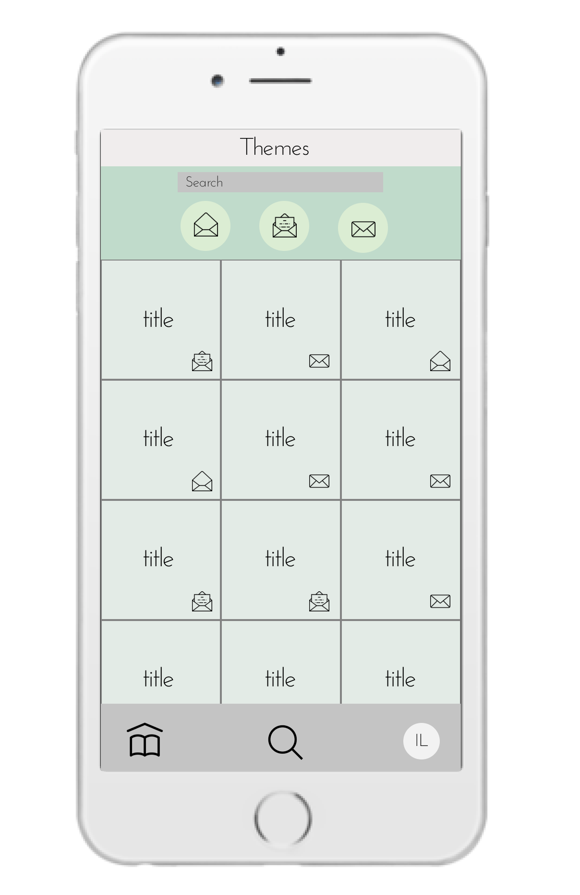
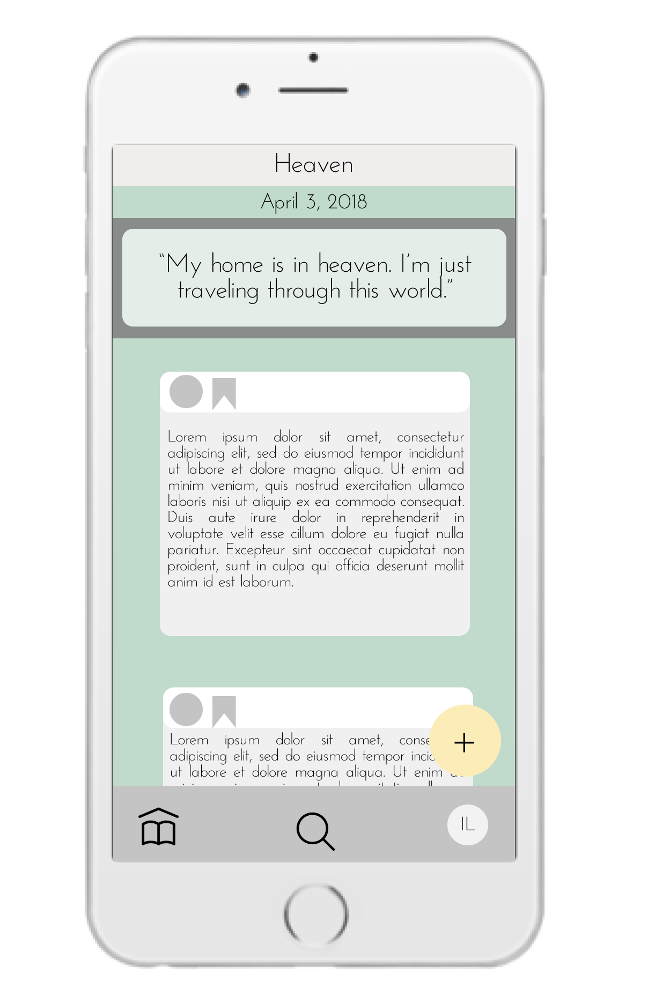
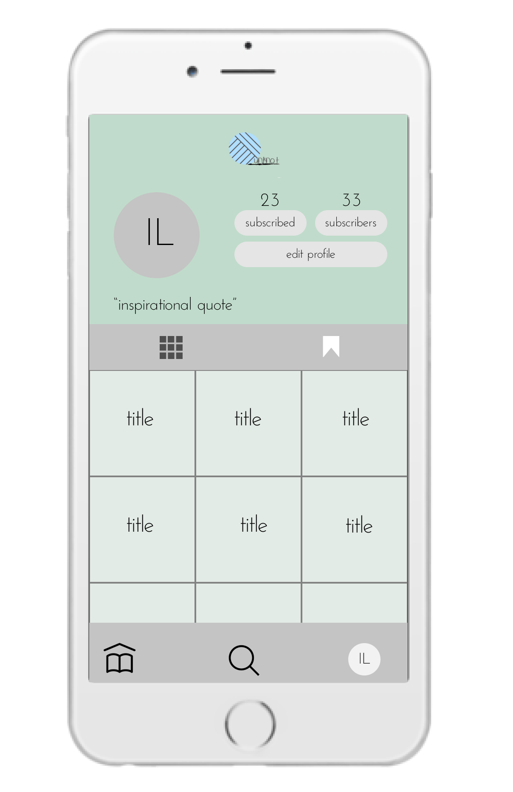
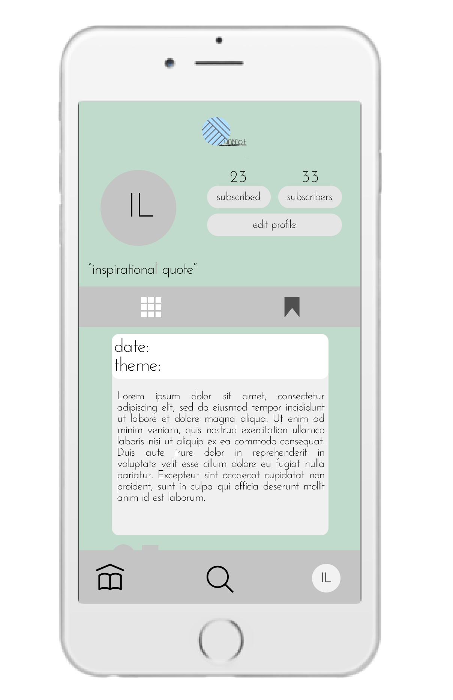

We named our app unknot and chose our logo to be a loose yarnball to give a sense of relaxation. Moreover, we wanted our users to take that loose end and run free with it, unraveling the expertise they have instored as they write freely.
Users will receive a theme twice a day -- 6:30 AM and 8:30 PM. These times were specifically chosen because those are the times people either get ready for work or get off work and get on a long commute on public trasnportation.
Along with the theme, an inspirational quote related to the theme will be sent.
All of the themes received will be in this section with different icons:
- open envelope: read
- open envelope with paper: started writing, but not published
- closed envelope: published
Once they click on a theme, the app will take them to a page of posts made by other users.
If they want to write about the theme, they can click on the “+” button on the bottom right corner.
This is the user’s priofile page. It keeps all the themes they have written about.
This is all the posts of other writers that the user saved.